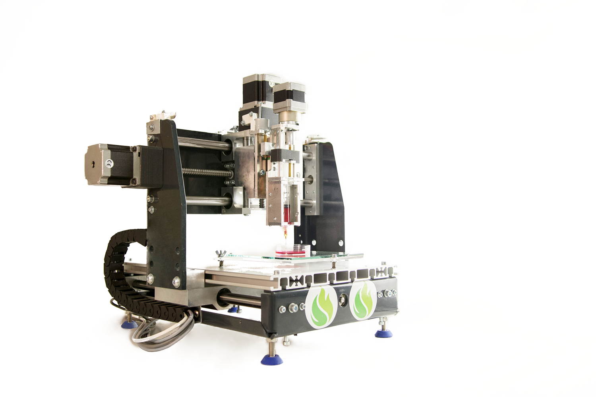
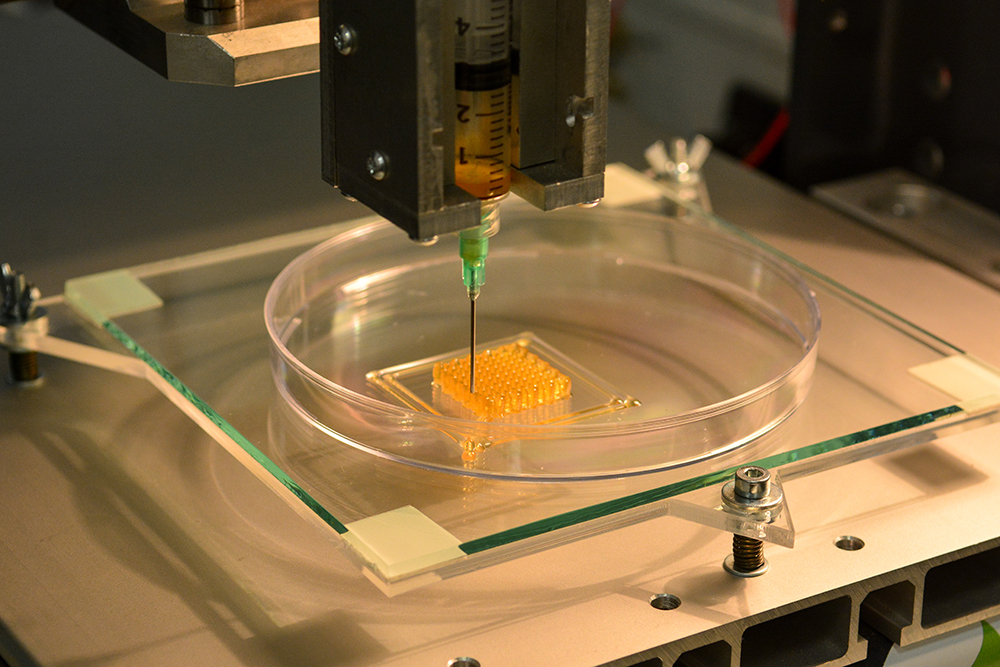
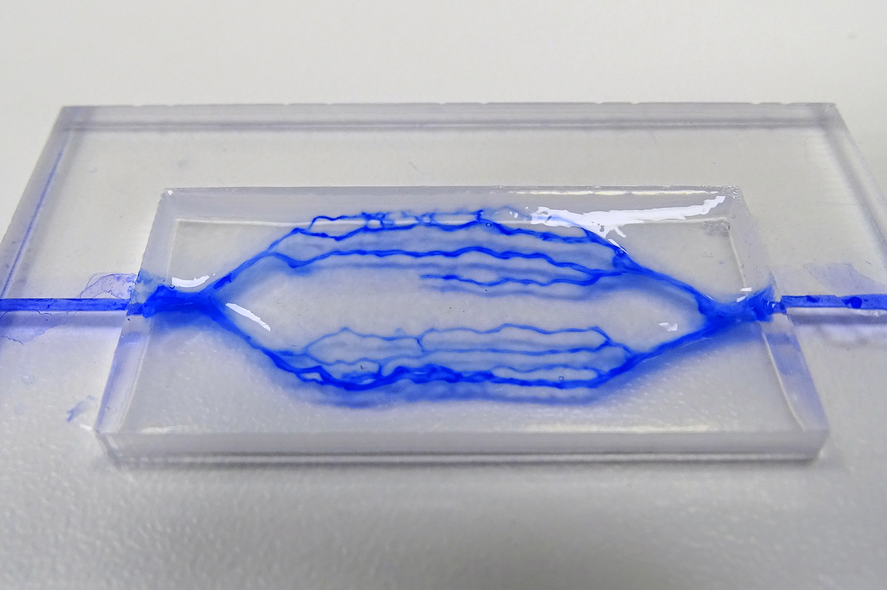

As the key technology partner we help researchers in science and industry to apply the convenience of 3D biofabrication technology in their specific application and facilitate the transition of ideas into operational devices and procedures.
VITAPRINT OPEN SOURCE 3D BIOPRINTING PLATFORM
We have designed a "full package" of open 3D bioprinting including:
- OPEN HARDWARE - Open, fully customizable, easy to modify and cost-effective hardware design with modular construction, enabling stacking of the extruders and thermo-regulation.
- OPEN METHODS - Open protocols of material preparation, parameter calibration and testing procedures
- OPEN DEMO FILES

DESIGN OF SPECIALIZED SCIENTIFIC AND INDUSTRIAL SOLUTIONS
We make the 3D biofabrication technology work for researchers and developers from science and industry, so they can focus on their core business.
We offer:
Hardware modifications and integrations for specific applications
Development of 3D fabrication methods
Hardware prototypes manufacturing
Our workflow:
1. Assessment of case-specific requirements
2. Hardware engineering / customisation when required
3. 3D biofabrication methods development
4. Testing and validation of developed solutions
5. Hardware manufacturing
6. Know-how transfer, consultancy and support


Want to take advantage of 3D biofabrication? Send us an informative inquiry with your requirements and we'll let you know about the possibilities.
Send inquiryPARTNERS


Contact us
Institute IRNAS Rače, Valvasorjeva 42, 2000 Maribor, Slovenia
Luka Banović - banovic@irnas.eu Boštjan Vihar - bostjan@irnas.eu